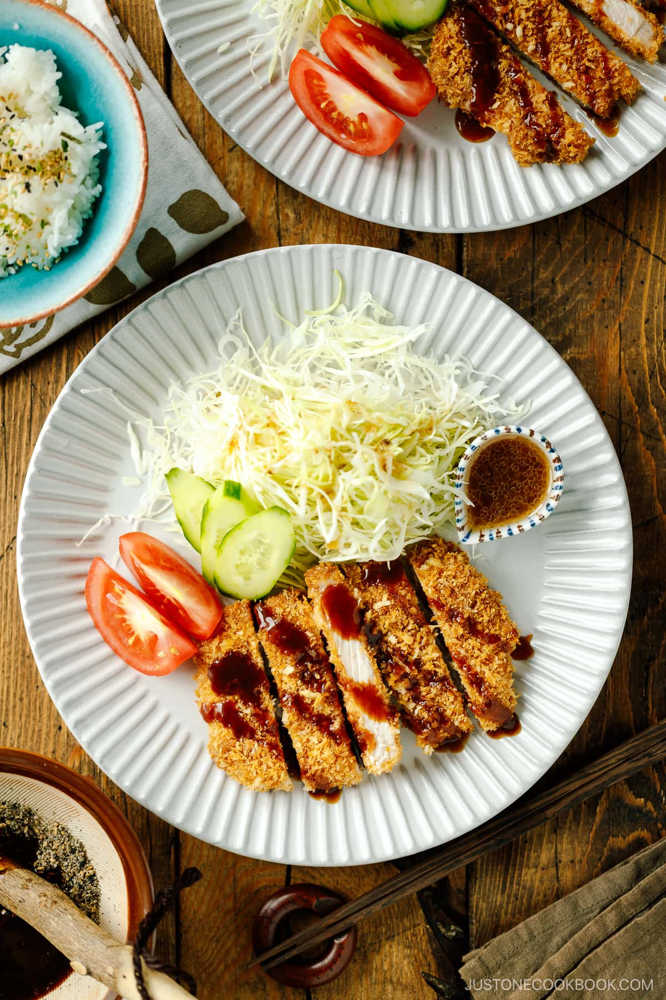

Baked Tonkatsu Recipe

Description
Tonkatsu (豚カツ) is one of the top popular Japanese foods consisting of a breaded, deep-fried pork cutlet. It’s crunchy and juicy and typically served with shredded cabbage and a drizzle of a savory sauce.
Ingredients
- Boneless pork loin chops – It should be half an inch thick. Pork loin chops
- Flour
- Eggs
- Panko - make sure to get Japanese breadcrumbs called panko.
- Cooking oil
- Tonkatsu sauce - You can always make my homemade tonkatsu sauce, if preferred!
Steps
- Toast the panko till golden brown in an ungreased pan.
- Prepare the meat by making slits on the connective tissue and fat, pounding the meat, and seasoning with salt and pepper.
- Dredge the pork in the flour, egg, and toasted panko.
- Bake in the oven until the pork is cooked through.
- Cut into 1-inch (2.5 cm) thick pieces and serve.